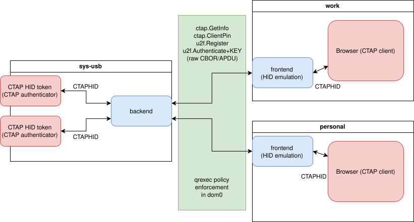

CTAP 代理
The Qubes CTAP Proxy is a secure proxy intended to make use of CTAP two-factor authentication devices with web browsers without exposing the browser to the full USB stack, not unlike the USB keyboard and mouse proxies implemented in Qubes.
What is CTAP, U2F, FIDO2?
CTAP, U2F, and FIDO2 are all related to authentication protocols and standards developed by the FIDO Alliance. CTAP has two versions: CTAP1 and CTAP2:
CTAP1/U2F (Universal 2nd Factor): U2F is an earlier protocol developed by the FIDO Alliance as part of the FIDO U2F standard. It provides a strong second-factor authentication method using dedicated hardware security keys. U2F allows users to authenticate to online services by simply plugging in a U2F-compliant security key and pressing a button, providing a higher level of security compared to traditional passwords.
CTAP2 (Client to Authenticator Protocol): CTAP2 is a protocol within the FIDO2 framework that enables communication between a client device (e.g., a computer or smartphone) and an authenticator (e.g., a hardware device). CTAP allows for secure and convenient authentication using public key cryptography and strong authentication factors.
FIDO2: FIDO2 is a set of standards and protocols developed by the FIDO Alliance for passwordless and strong authentication. It combines two main components: CTAP (Client to Authenticator Protocol) and WebAuthn (Web Authentication API). FIDO2 enables users to authenticate to online services using various authentication methods, such as biometrics, PINs, or hardware tokens, instead of relying on passwords.
The aim of these protocols is to introduce additional control which provides good protection in cases in which the passphrase is stolen (e.g. by phishing or keylogging). While passphrase compromise may not be obvious to the user, a physical device that cannot be duplicated must be stolen to be used outside the owner’s control. Nonetheless, it is important to note at the outset that CTAP cannot guarantee security when the host system is compromised (e.g. a malware-infected operating system under an adversary’s control).
The CTAP specification defines protocols for multiple layers from USB to the browser API, and the whole stack is intended to be used with web applications (most commonly websites) in browsers. In most cases, authenticators are USB dongles. The protocol is very simple, allowing the devices to store very little state inside (so the tokens may be reasonably cheap) while simultaneously authenticating a virtually unlimited number of services (so each person needs only one token, not one token per application). The user interface is usually limited to a single LED and a button that is pressed to confirm each transaction, so the devices themselves are also easy to use. Both CTAP1 and CTAP2 share the same underlying transports: USB Human Interface Device (USB HID), Near Field Communication (NFC), and Bluetooth Smart / Bluetooth Low Energy Technology (BLE).
Currently, the most common form of two-step authentication consists of a numeric code that the user manually types into a web application. These codes are typically generated by an app on the user’s smartphone or sent via SMS. By now, it is well-known that this form of two-step authentication is vulnerable to phishing and man-in-the-middle attacks due to the fact that the application requesting the two-step authentication code is typically not itself authenticated by the user. (In other words, users can accidentally give their codes to attackers because they do not always know who is really requesting the code.) In the CTAP model, by contrast, the browser ensures that the token receives valid information about the web application requesting authentication, so the token knows which application it is authenticating (for details, see here). Nonetheless, some attacks are still possible even with CTAP (more on this below).
The Qubes approach to CTAP
In a conventional setup, web browsers and the USB stack (to which the authenticator is connected) are all running in the same monolithic OS. Since the CTAP model assumes that the browser is trustworthy, any browser in the OS is able to access any key stored on the authenticator. The user has no way to know which keys have been accessed by which browsers for which services. If any of the browsers are compromised, it should be assumed that all the token’s keys have been compromised. (This problem can be mitigated, however, if the CTAP device has a special display to show the user what’s being authenticated.) Moreover, since the USB stack is in the same monolithic OS, the system is vulnerable to attacks like BadUSB.
In Qubes OS, by contrast, it is possible to securely compartmentalise the browser in one qube and the USB stack in another so that they are always kept separate from each other. The Qubes CTAP Proxy then allows the token connected to the USB stack in one qube to communicate with the browser in a separate qube. We operate under the assumption that the USB stack is untrusted from the point of view of the browser and also that the browser is not to be trusted blindly by the token. Therefore, the token is never in the same qube as the browser. Our proxy forwards only the data necessary to actually perform the authentication, leaving all unnecessary data out, so it won’t become a vector of attack. This is depicted in the diagram below (click for full size).

The Qubes CTAP Proxy has two parts: the frontend and the backend. The frontend runs in the same qube as the browser and presents a fake USB-like HID device using uhid. The backend runs in sys-usb and behaves like a browser. This is done using the fido2 reference library. All of our code was written in Python. The standard qrexec policy is responsible for directing calls to the appropriate domains.
The vault qube with a dashed line in the bottom portion of the diagram depicts future work in which we plan to implement the Qubes CTAP Proxy with a software token in an isolated qube rather than a physical hardware token. This is similar to the manner in which Split GPG allows us to emulate the smart card model without physical smart cards.
One very important assumption of protocol is that the browser verifies every request sent to the authenticator — in particular, that the web application sending an authentication request matches the application that would be authenticated by answering that request (in order to prevent, e.g., a phishing site from sending an authentication request for your bank’s site). With the WebUSB feature in Chrome, however, a malicious website can bypass this safeguard by connecting directly to the token instead of using the browser’s CTAP API.
The Qubes CTAP Proxy also prevents this class of attacks by implementing an additional verification layer. This verification layer allows you to enforce, for example, that the web browser in your twitter qube can only access the CTAP key associated with https://twitter.com. This means that if anything in your twitter qube were compromised — the browser or even the OS itself — it would still not be able to access the CTAP keys on your token for any other websites or services, like your email and bank accounts. This is another significant security advantage over monolithic systems. For details and instructions, see Advanced usage: per-qube key access.
For even more protection, you can combine this with the Qubes firewall to ensure, for example, that the browser in your banking qube accesses only one website (your bank’s website). By configuring the Qubes firewall to prevent your banking qube from accessing any other websites, you reduce the risk of another website compromising the browser in an attempt to bypass CTAP authentication.
Installation
These instructions assume that there is a sys-usb qube that holds the USB stack, which is the default configuration in most Qubes OS installations.
In dom0:
$ sudo qubes-dom0-update qubes-ctap-dom0
$ qvm-service --enable work qubes-ctap-proxy
The above assumes a work qube in which you would like to enable ctap. Repeat the qvm-service command for all qubes that should have the client proxy enabled. Alternatively, you can add qubes-ctap-proxy in in the Qube Manager of each qube you would like to enable the service. Attempting to start the qubes-ctap-proxy service in the device-hosting qube (sys-usb) will fail.
In Fedora templates:
$ sudo dnf install qubes-ctap
In Debian templates:
$ sudo apt install qubes-ctap
As usual with software updates, shut down the templates after installation, then restart sys-usb and all qubes that use the proxy. After that, you may use your CTAP authenticator (but see Browser support below).
Advanced usage: per-qube key access
If you are using Qubes 4.0, you can further compartmentalise your CTAP keys by restricting each qube’s access to specific keys. For example, you could make it so that your twitter qube (and, therefore, all web browsers in your twitter qube) can access only the key on your CTAP token for https://twitter.com, regardless of whether any of the web browsers in your twitter qube or the twitter qube itself are compromised. If your twitter qube makes an authentication request for your bank website, it will be denied at the Qubes policy level.
To enable this, create a file in dom0 named /etc/qubes/policy.d/30-user-ctapproxy.policy with the following content:
policy.RegisterArgument +u2f.Authenticate sys-usb @anyvm allow target=dom0
Next, empty the contents of /etc/qubes-rpc/policy/u2f.Authenticate so that it is a blank file. Do not delete the file itself. (If you do, the default file will be recreated the next time you update, so it will no longer be empty.) Finally, follow your web application’s instructions to enroll your token and use it as usual. (This enrollment process depends on the web application and is in no way specific to Qubes CTAP.)
The default model is to allow a qube to access all and only the keys that were enrolled by that qube. For example, if your banking qube enrolls your banking key, and your twitter qube enrolls your Twitter key, then your banking qube will have access to your banking key but not your Twitter key, and your twitter qube will have access to your Twitter key but not your banking key.
Non-default USB qube name
If your USB qube has a different name (not sys-usb), you need to update in two places:
In the template, run these commands (replace
YOUR_USB_QUBEwith your actual USB qube name):[user@template] $ systemctl enable qubes-ctapproxy@YOUR_USB_QUBE.service [user@template] $ systemctl disable qubes-ctapproxy@sys-usb.service
In dom0, edit the policy file
30-user-ctapproxyand replacesys-usbwith your USB qube name.
Template and browser support
The large number of possible combinations of template (Fedora 37, 38; Debian 10, 11) and browser (multiple Google Chrome versions, multiple Chromium versions, multiple Firefox versions) made it impractical for us to test every combination that users are likely to attempt with the Qubes CTAP Proxy. In some cases, you may be the first person to try a particular combination. Consequently, (and as with any new feature), users will inevitably encounter bugs. We ask for your patience and understanding in this regard. As always, please report any bugs you encounter.